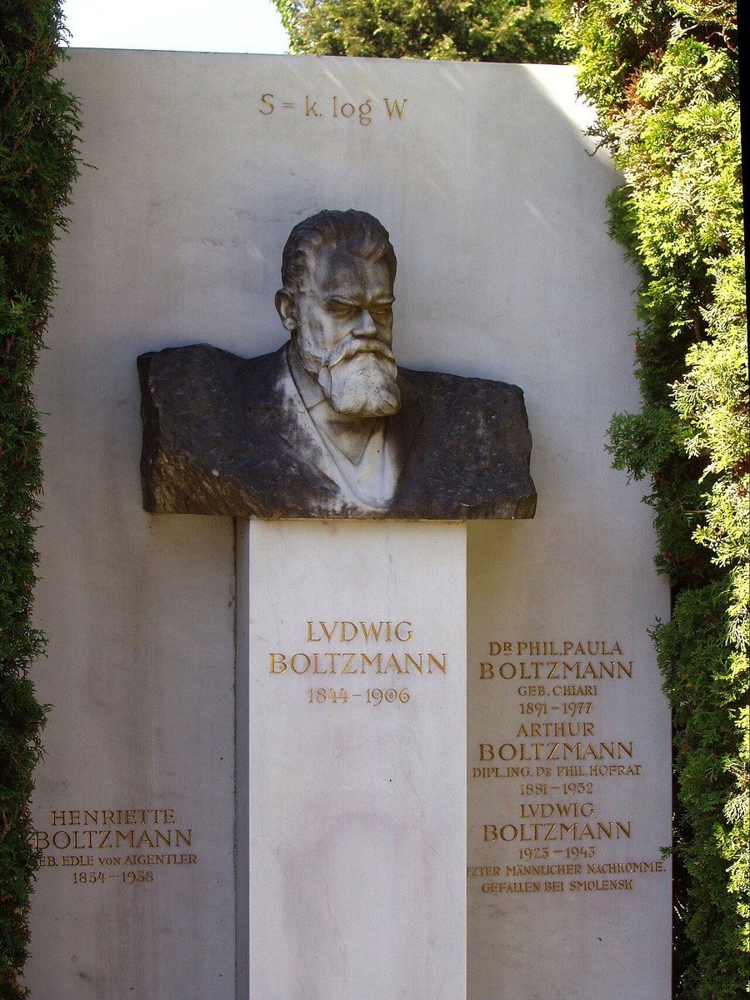
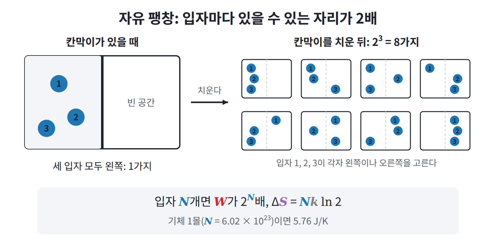
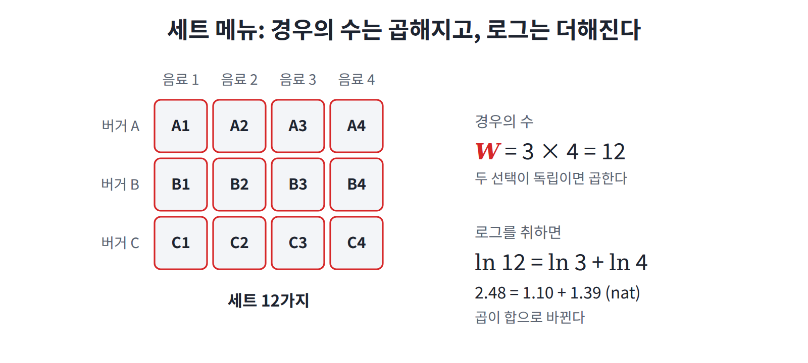
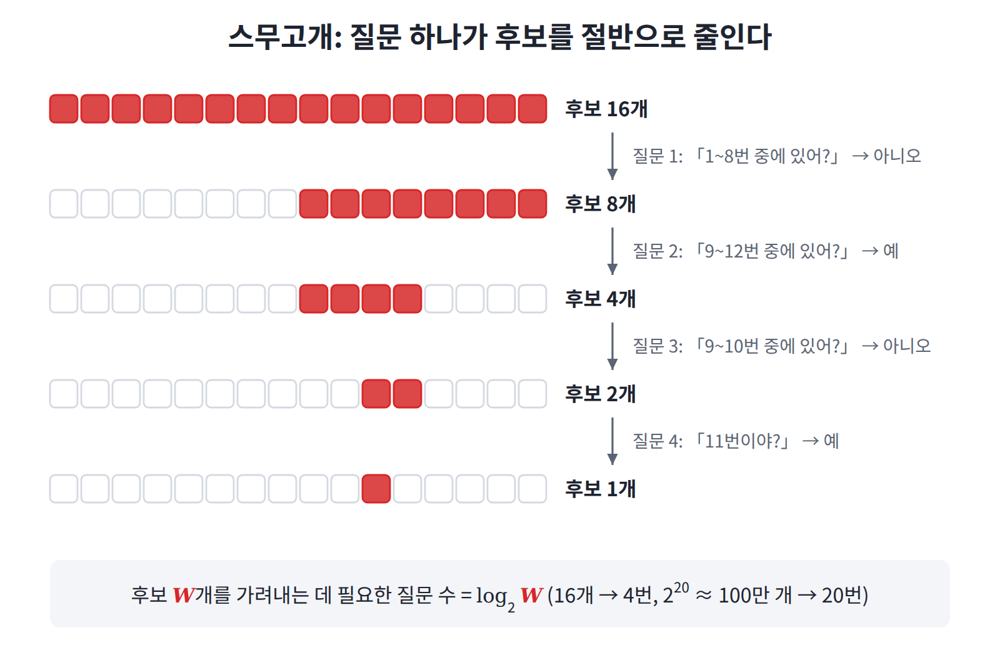

볼츠만 엔트로피: 경우의 수의 로그
클라우지우스의 엔트로피는 잴 수는 있었지만, 그것이 무엇을 재는지는 아무도 말하지 못했다. 열을 온도로 나눈 값이 늘어난다는 것은, 물체 안에서 무엇이 늘어난다는 뜻일까?
역사: 볼츠만의 답과 그의 묘비
1877년 볼츠만은 이 물음에 답을 내놓았다. 클라우지우스의 엔트로피가 바로 "현재 거시상태에 속한 미시상태 수의 로그"라는 것이다.
이 답에는 재미있는 사연이 있다. 이 답을 지금의 식 모양으로 처음 쓴 사람은 볼츠만이 아니라 1900년경의 플랑크이고, 식에 들어가는 상수 k를 도입해 "볼츠만 상수"라는 이름을 붙인 것도 플랑크다. 그럼에도 이 식은 볼츠만의 이름과 함께 기억되어, 빈 중앙묘지의 볼츠만 묘비에 새겨져 있다.

경우의 수로 쓴 엔트로피
묘비에 새겨진 식을 이 책의 기호로 쓰면 다음과 같다.
여기서 W는 현재 거시상태에 속한 미시상태의 개수, 즉 경우의 수다. 그런데 ln W는 단위가 없는 순수한 수이므로, 이것을 클라우지우스의 단위 J/K로 옮기려면 환산 상수가 하나 필요하다. 그 역할을 하는 것이 k (볼츠만 상수, 1.38 × 10⁻²³ J/K)이며, ML에서는 k = 1로 둔다.
두 정의가 같은 값을 주는가: 자유 팽창
한쪽은 열을 재서 얻고 다른 쪽은 경우의 수를 세서 얻는 두 정의가 정말 같은 값을 주는지, 간단한 예로 확인해 보자. 상자 왼쪽 절반에 기체 1몰이 있고 오른쪽은 비어 있다고 하자. 칸막이를 치우면 기체는 상자 전체로 퍼지는데, 이것을 자유 팽창(free expansion)이라 한다.

먼저 볼츠만의 방식으로 세어 보자. 칸막이가 사라지면 입자 하나가 있을 수 있는 위치의 후보가 2배가 된다. 입자 N개가 각자 독립적으로 2배씩 늘어나므로 W는 2ᴺ배가 되고, 엔트로피는 다음만큼 늘어난다.
여기에 N = 6.02 × 10²³, k = 1.38 × 10⁻²³ J/K를 넣으면 ΔS ≈ 5.76 J/K다.
이번에는 클라우지우스의 방식으로 재 보자. 같은 처음 상태와 같은 끝 상태를, 피스톤을 아주 천천히 밀어내며 열을 받는 과정으로 이은 뒤 Σ Q/T를 재면 역시 5.76 J/K가 나온다.
한쪽은 열량계로 잰 값이고 다른 쪽은 경우의 수를 센 값인데, 두 값이 정확히 일치한 것이다. 그런데 칸막이를 치우는 과정을 두고 왜 굳이 “천천히” 미는 과정을 따로 엮어야 할까? 이 물음은 뒤의 문제 3에서 다룬다.
왜 하필 로그인가
그런데 S = k ln W에서 왜 하필 로그일까? 흔히 "곱을 합으로 바꾸기 편해서"라고 답하지만, 이것은 결과만 말한 것이다. 실제 이유는 로그가 아니면 이미 측정되던 값과 맞지 않기 때문이다. 이 이유를 세 가지로 나누어 살펴보자.
(1) 측정값은 더해지고, 경우의 수는 곱해진다
클라우지우스의 엔트로피는 물질의 양에 비례한다. 그래서 기체 두 통을 나란히 두면 전체 엔트로피는 두 값의 합이 된다.
반면 경우의 수는 곱이다. 계 A가 W₁가지, 계 B가 W₂가지 미시상태를 독립적으로 고를 수 있으면, 두 계를 합친 계는 W₁ × W₂가지 상태를 갖는다. 버거 3종류와 음료 4종류를 고르는 세트 메뉴가 12가지인 것과 같은 이치다. 그러므로 경우의 수를 엔트로피로 바꾸는 함수 f는 곱을 합으로 바꿔야 하고, 다음을 만족해야 한다.
그런데 연속이고 증가하는 함수 가운데 이 조건을 만족하는 것은 f(W) = c ln W뿐이다(증명은 아래 문제 1). 다시 말해 로그는 편의로 고른 것이 아니라 유일한 선택지였다. 남는 자유는 상수 c 하나뿐이고, 그 상수가 바로 k다.

(2) W는 다룰 수 없는 크기다
두 번째 이유는 크기다. 기체 1몰의 W는 대략 10^(10²³) 수준인데, 이것은 자릿수만 10²³개인 수라서 비교도 계산도 할 수 없다. 하지만 로그를 취하면 ln W는 "입자 수 × 입자당 얼마"라는 평범한 크기의 수가 된다. 이를테면 동전 N개 중 앞면 비율이 p인 경우의 수는 스털링 근사로 ln W ≈ N·h(p)(h(p)는 비율 p로 정해지는 동전 하나당 몫)가 되는데, 바로 그 모양이다.
(3) ln W는 "몇 번 물어봐야 하는가"다
세 번째 이유는 로그가 무엇을 세는지에 있다. 스무고개를 생각해 보자. 예/아니오 질문 하나로 후보를 절반으로 줄일 수 있으므로, 질문 20번이면 2²⁰ ≈ 100만 개 후보 가운데 하나를 가려낼 수 있다. 거꾸로 말하면, 후보가 W개일 때 필요한 질문 수는 log₂ W다.
그러므로 엔트로피는 "거시상태를 알 때, 미시상태를 알아내려면 예/아니오 질문이 몇 번 더 필요한가"라고 읽을 수 있다. 후보 수가 아니라 질문 수를 세면, 독립된 두 계의 질문 수가 더해지는 것은 당연하다. (1)에서 본 덧셈의 성질을 다른 쪽에서 다시 만난 셈이다.

ML에서: log-likelihood를 쓰는 이유
우리가 likelihood 대신 log-likelihood를 최적화하는 것도 (1)과 같은 이유에서다. 독립 샘플의 확률은 곱해지지만, 손실은 샘플마다 더해져 데이터 양에 비례해야 한다. 그래야 미니배치 평균이나 토큰당 loss가 의미를 갖는다. 수치 underflow를 막아 주는 것은 부수적인 이점일 뿐이다.
문제 1. 두 계를 합치면
선생님의 수업. 김민준(학부 3학년, ML 강의 몇 개 수강)과 이서연(수학과 3학년)이 문제를 풀고, 선생님이 틀린 곳을 짚는다.
계 A는 동전 4개 중 앞면 2개, 계 B는 동전 3개 중 앞면 1개인 거시상태다. 두 계를 한꺼번에 볼 때 W와 S를 구하라.

A가 6가지, B가 3가지니까 W = 9. S = ln 9 ≈ 2.20 nat.
민준아, A가 HHTT일 때 B는 여전히 세 가지 다 가능하잖아. 그럼 6 × 3 = 18이야.

서연 학생이 맞아요. 세트 메뉴와 같아요. 독립적으로 고르는 경우의 수는 곱해져요. S = ln 18 = ln 6 + ln 3 ≈ 1.79 + 1.10 = 2.89 nat이고, 엔트로피는 각자의 합이 됩니다. nat은 자연로그 ln으로 잰 값에 붙이는 단위예요.
그런데 선생님, 곱을 합으로 바꾸는 함수가 정말 로그뿐인가요? 다른 함수도 있을 것 같은데요.
해석학에서 코시 함수방정식 g(u + v) = g(u) + g(v) 배웠죠? 연속이면 해가 뭐였어요?

g(u) = cu, 직선뿐이에요.
f(W₁W₂) = f(W₁) + f(W₂)에서 W = e^u로 두고 g(u) = f(e^u)라고 하면, 정확히 코시 방정식이 돼요. 그러니 g(u) = cu, 즉 f(W) = c ln W. 다른 선택지는 없어요.

√W 같은 걸 쓰면 안 돼요?
직접 해 보세요.

√18 ≈ 4.24인데 √6 + √3 ≈ 2.45 + 1.73 = 4.18. 비슷하긴 한데 안 맞네요.
여기서는 우연히 비슷하지만, W가 커지면 격차가 크게 벌어져요. 이런 함수를 쓰면 물 두 통을 합쳤을 때 엔트로피가 두 배가 되지 않는다는 예측이 나오는데, 실험과 맞지 않아요.
문제 2. 미니배치 두 개의 loss 합치기
언어 모델을 평가하는데, 미니배치 A는 토큰 100개에서 토큰당 평균 loss가 2.0 nat, 미니배치 B는 토큰 300개에서 3.0 nat이었다. 토큰 400개 전체의 토큰당 평균 loss는 얼마인가? 토큰 400개 전체에 모델이 준 확률은 두 미니배치에 준 확률과 어떤 관계인가?
평균이 두 개니까 (2.0 + 3.0)/2 = 2.5 nat이요.

문제 1이랑 같은 구조 아니야? 두 미니배치는 독립이니까 전체 확률은 두 확률의 곱이고, 로그를 씌우면 loss의 합끼리 더해져. A의 합은 100 × 2.0 = 200, B는 300 × 3.0 = 900. 전체 1100을 400으로 나누면 2.75야.
서연 학생이 맞아요. 전체 확률은 e^(−200) × e^(−900) = e^(−1100)이에요. 더해지는 것은 loss의 합이고, 평균은 합을 모두 더한 뒤에 전체 토큰 수로 나눠야 해요. 크기가 다른 두 계의 엔트로피를 합칠 때 입자 하나당 엔트로피를 그냥 평균하지 않는 것과 같아요.

손님 100명인 가게와 300명인 가게의 매출을 합칠 때 가게별 객단가만 평균 내면 안 되는 거랑 같네요. 그래서 평가할 때는 loss를 합으로 모았다가 마지막에 전체 토큰 수로 나누는 거고요.